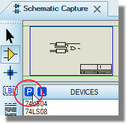
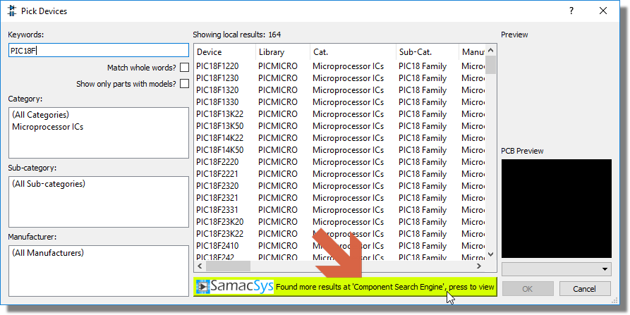
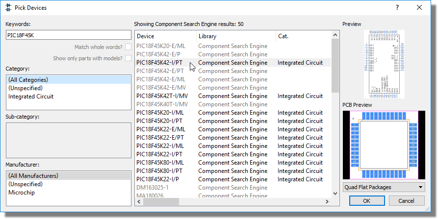
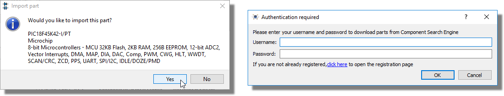
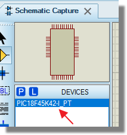
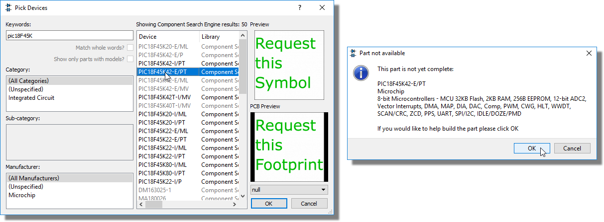

With the continuous release of new silicon devices from an increasing number of manufacturers it is often the case that the installed Proteus libraries don't contain the exact part that you are looking for. Fortunately, there are specialist companies who provide a huge number (15 million or so !) of schematic components and footprints for import into CAD software. We've teamed up with one of these companies, Samacsys, to provide a seamless search and import into the Proteus software.
This works directly through the standard library picker in the schematic module where web results will be shown and a double click will import the part as though it was in the installed libraries.
This service is only available for customers with a valid USC. If your maintenance contract has expired and you do not wish to renew or if you prefer to use a different vendor for your parts, you can import manually from several vendors via the library import dialogue on the Library menu.
Web search import works as follows:
1) Launch the library picker in the schematic module (also 'P' on the keyboard).

2) Search for a part. If matches exist in the installed libraries they will be shown and you can click to open web search results from the bar at the bottom of the picker. If there are no matches from the installed libraries you will go directly to web search results.

3) Results in normal font are available for import. Results in disabled text can be requested (at no charge) from the build service form.

4) Double click to import. The first time you do this you will need to supply credentials or create a free account.

5) When you double click to import, both the schematic part and the associated PCB footprint will be brought into your user libraries and also picked into the current project. In most cases, the 3D STEP file for the footprint will also be imported.

If you need to request a part to be made you can do so directly from the pick dialogue by double clicking on one of the disabled entries in the web search. The service is free of charge and average turnaround is 24-48 hours.
